ភ្លើងមុខឡានធ្វើពីប្លាស្ទិច ហើយខាងលើមានស្រទាប់ថ្នាំថ្លា (Clear) ការពារ។ ពន្លឺថ្ងៃ (UV) ធ្វើឱ្យស្រទាប់នេះខូចបន្តិចម្ដងៗ។
ヘッドライトはプラスチック製で、表面のクリア（塗膜）が紫外線で劣化していきます。
បើទុកចោលយូរ ⇒ ការខូចកាន់តែធ្ងន់ ⇒ ការងារកាន់តែពិបាក។ ដូច្នេះត្រូវធ្វើតាមកម្រិតឱ្យត្រូវ។ 放置すると劣化が進み、作業も大変になります。状態に合った方法で施工します。
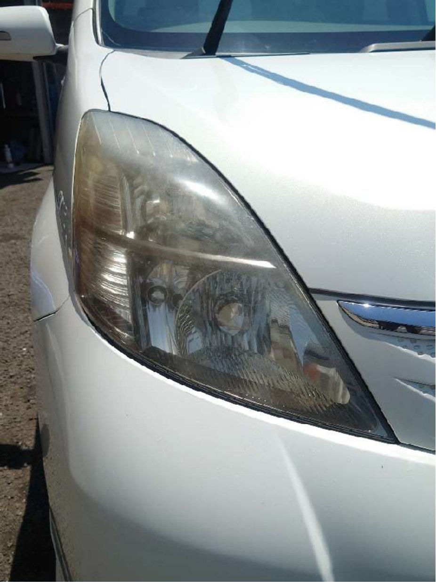
កម្រិត ១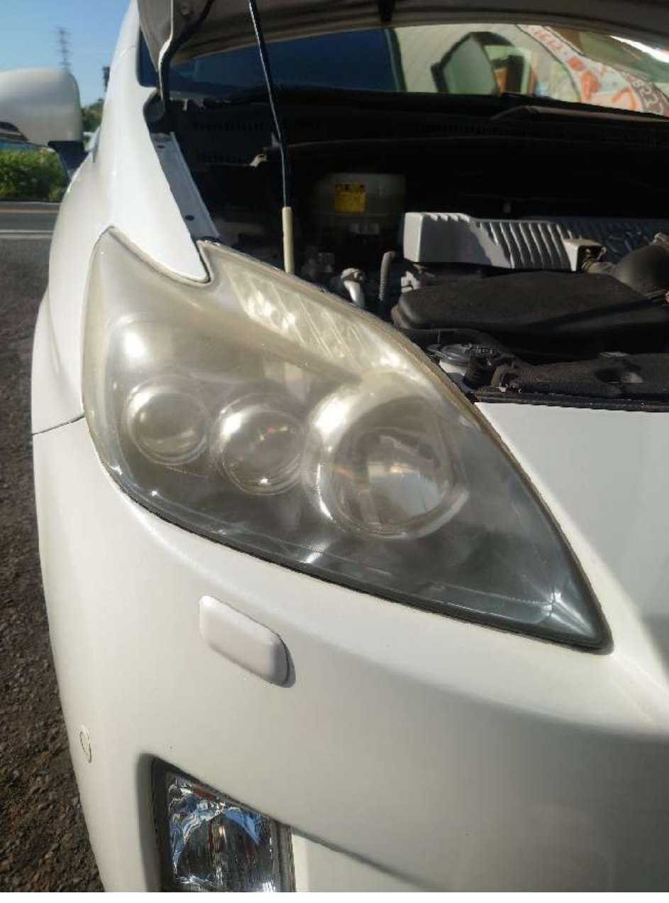
កម្រិត ២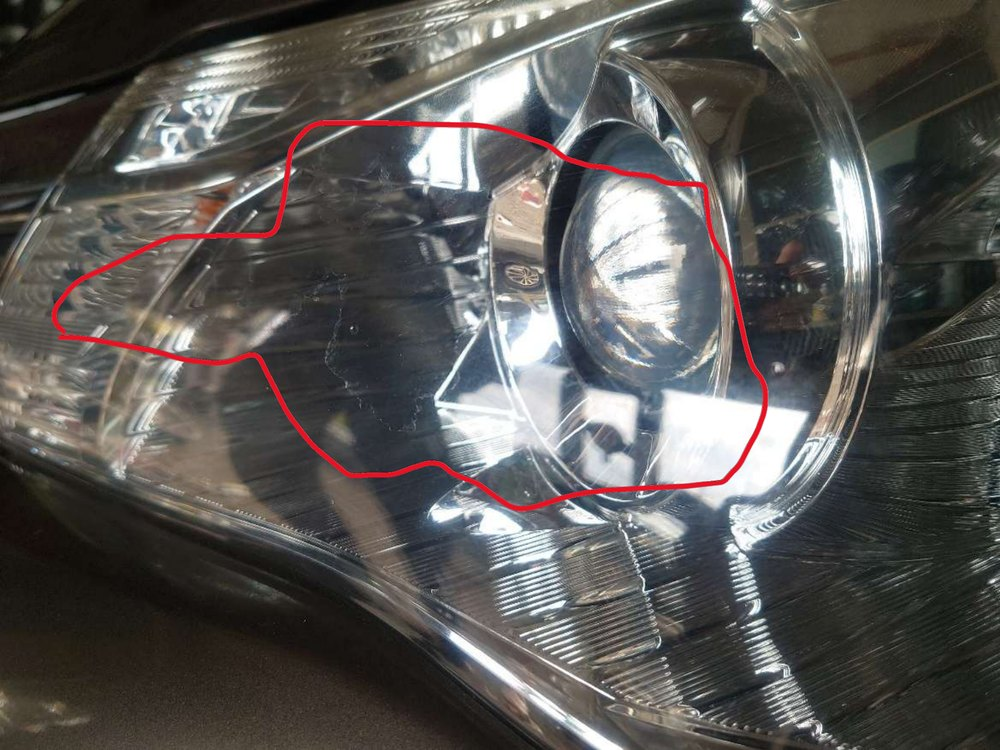
កម្រិត ៣ទឹកថ្នាំនេះរំលាយភាពកខ្វក់នៅលើផ្ទៃ ហើយជូតចេញ ⇒ ពណ៌លឿង និងស្រអាប់ថយ។ 表面の汚れを溶かしながら除去（黄ばみ・くすみの除去）。
ខាត់ដើម្បីលុបពណ៌លឿង + ស្រអាប់ ហើយធ្វើឱ្យកន្លែង Clear របកតិចៗ មើលមិនសូវឃើញ។ 磨きで黄ばみ・くすみを除去。小さなクリア剥がれを目立たなくする。
សម្រាប់ Clear របក / លឿងខ្លាំង / ស្នាមប្រេះ។ ខាត់យកស្រទាប់ Clear ចាស់ចេញទាំងអស់ ⇒ ភ្លើងមុខថ្លាឡើងវិញ ស្នាមប្រេះថយ។ クリア剥がれ・強い黄ばみ・ひび割れ向け。古いクリアを除去してリフレッシュ、ひび割れも低減。
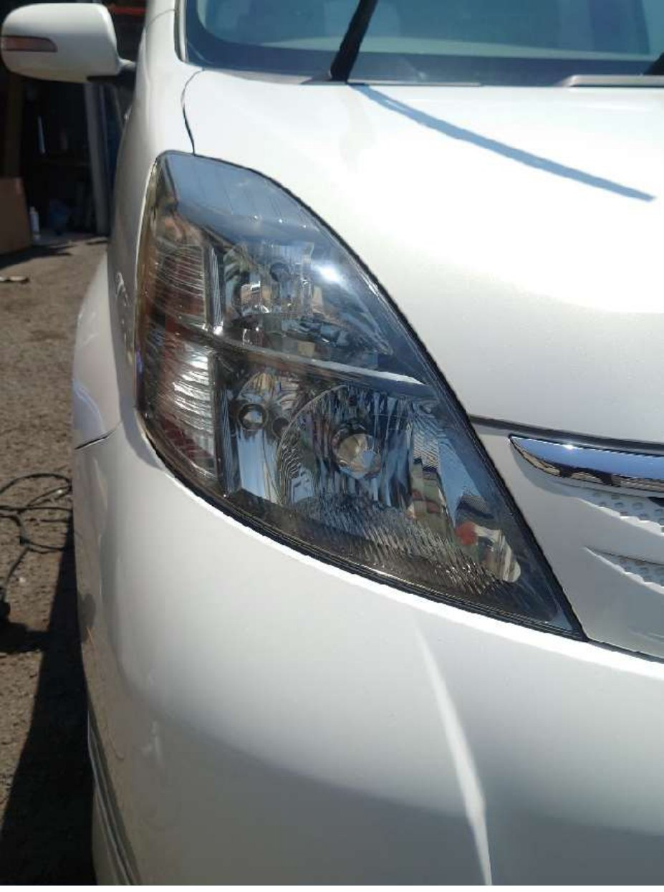
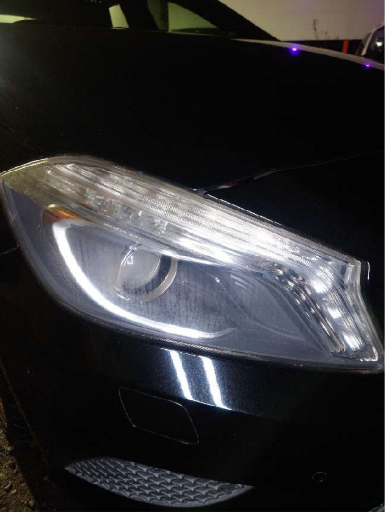
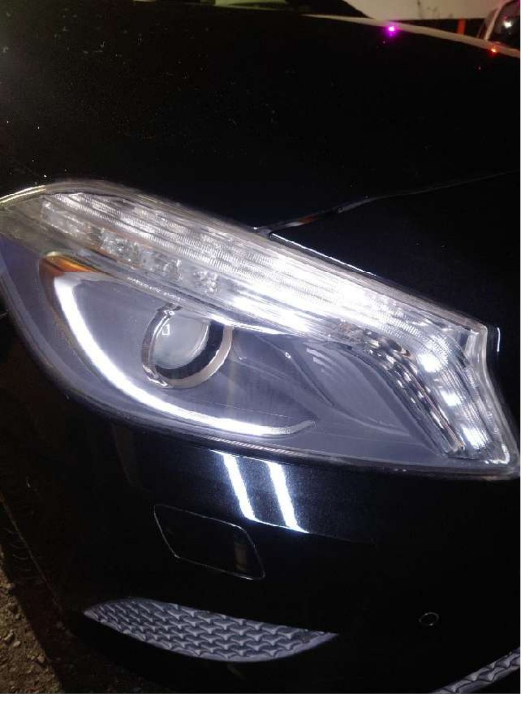
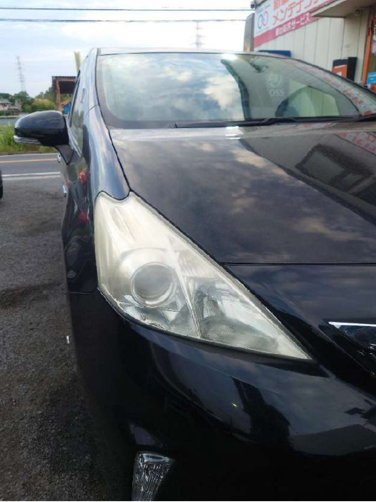
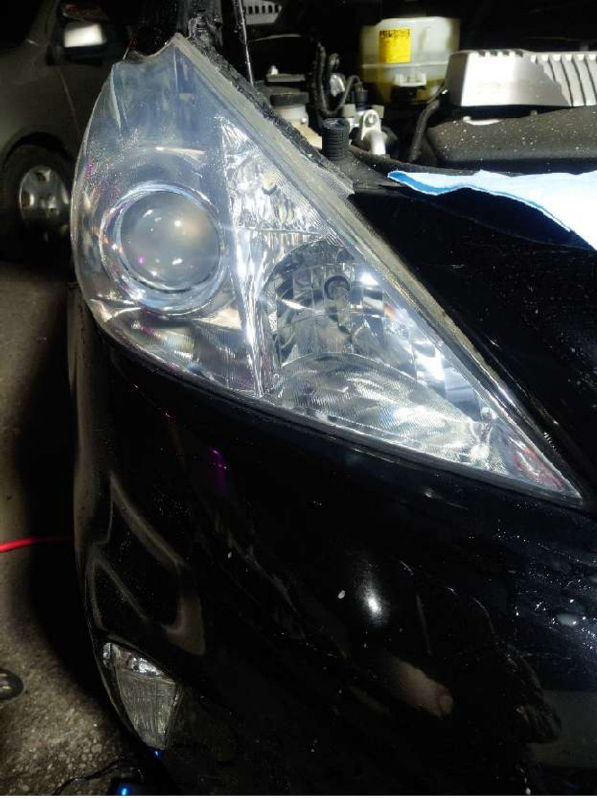
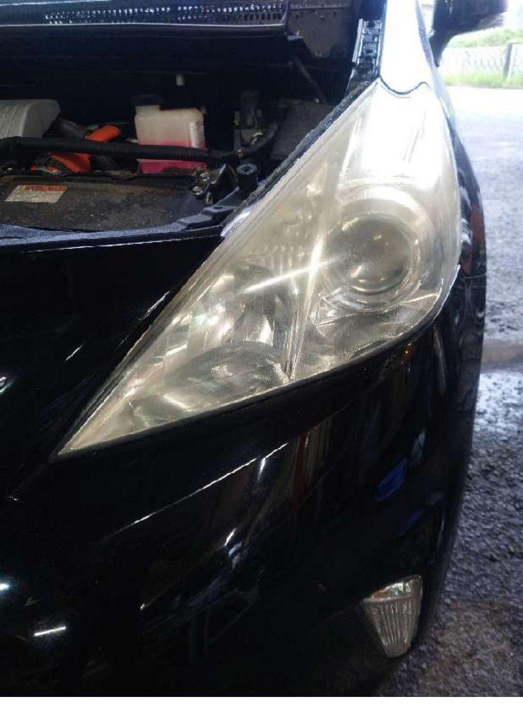
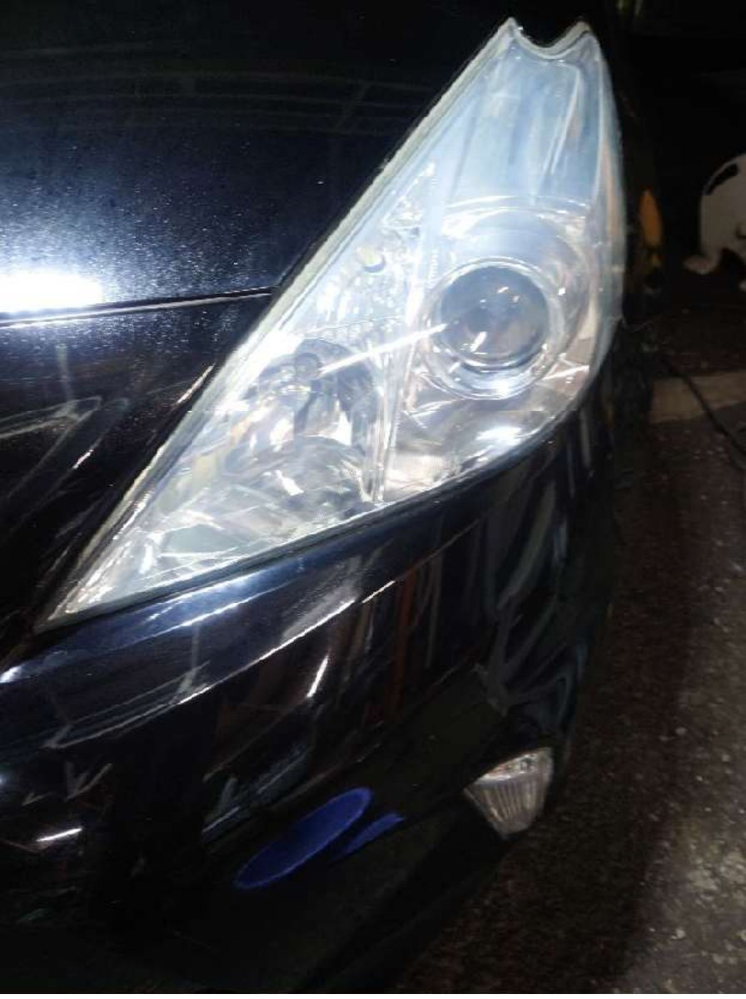
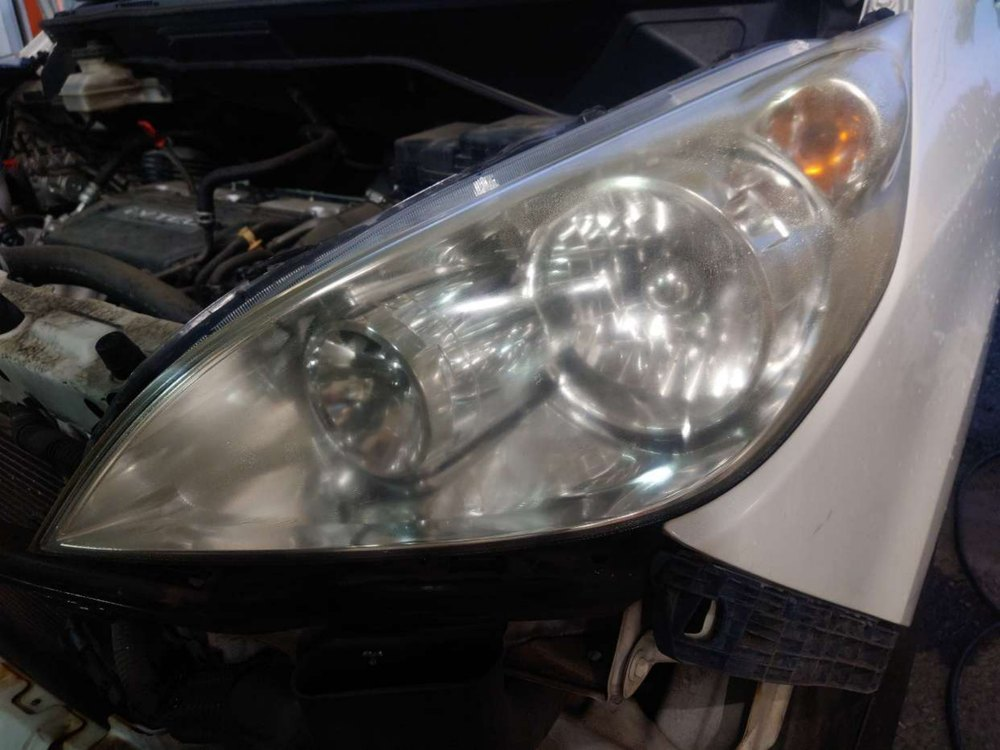
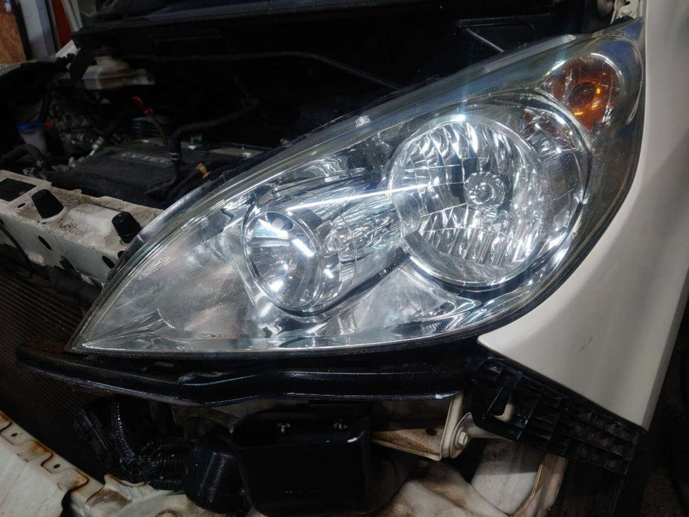
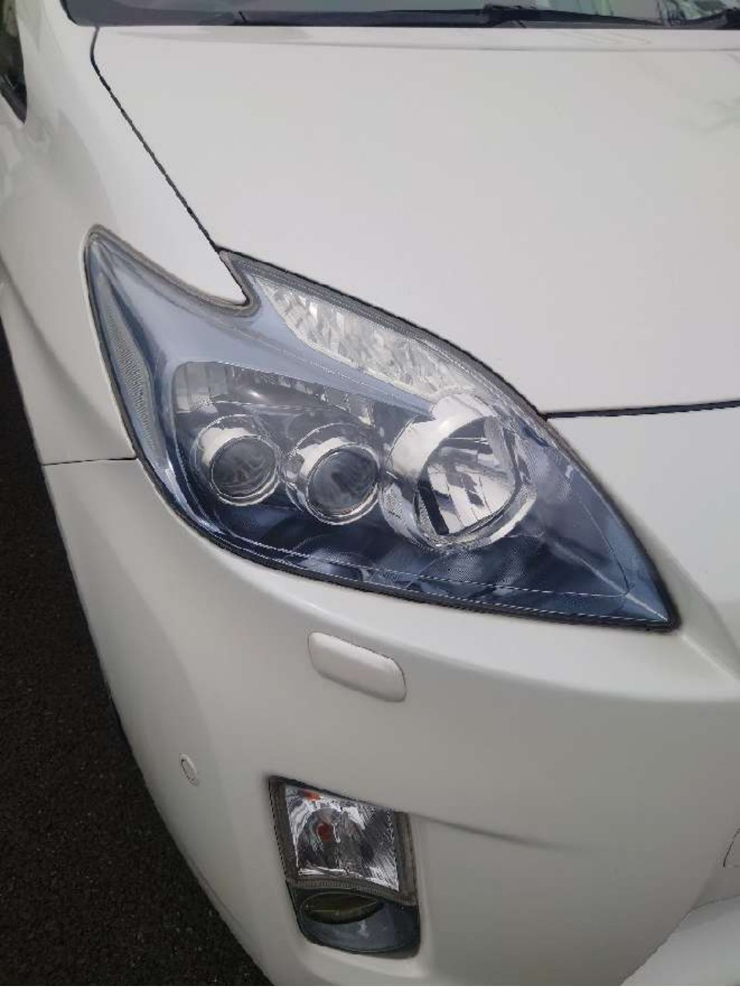